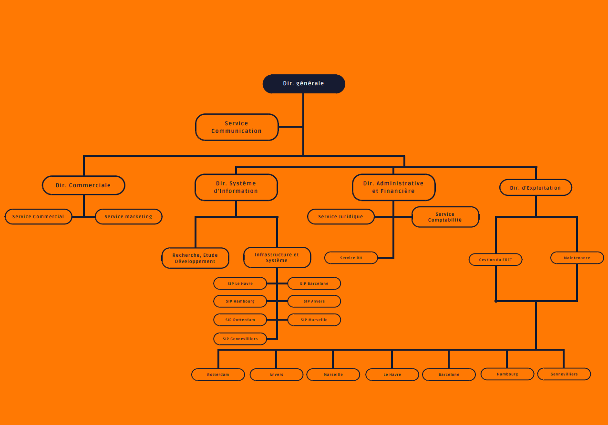

Présentation de l'entreprise
A. Le secteur d’activité: transport maritime
Avec 9 milliards de tonnes de marchandises transportées par an, la voie maritime est le premier mode de transport de marchandises et occupe une place grandissante dans le commerce international. C’est un mode peu onéreux mais dont les délais d’acheminements sont plus longs. Les marchandises peuvent être acheminées sur des navires spécialisés polythermes destinés au transport des denrées périssables ou sur des navires non spécialisés (cargos conventionnels, porte-conteneurs, navires mixtes, porte-barges pour transport combiné fluvial/maritime).
La conteneurisation permet les coûts les plus bas et offre un certain nombre d’avantages tels que la sécurité de la chaîne du froid, la traçabilité, la rapidité, les services et livraisons en porte à porte. Les progrès technologiques liés aux conditionnements, à la mécanisation, à la réfrigération des navires (produits sous atmosphère contrôlée et sous atmosphère modifiée), le suivi des marchandises via des systèmes informatisés ont permis au transport maritime de devenir compétitif pour l’acheminement des produits frais, entrainant une baisse des coûts.
Le fret frigorifique transporté à travers le monde concerne en grande partie la viande, les poissons, les produits laitiers, les fruits et légumes (dont 80% de bananes, agrumes et autres...). Pour les acheminer, on fait appel aux navires « reefer » (un navire frigorifique), le mode le plus économique et le moins polluant. Cependant, il est concurrencé par la conteneurisation qui profite de la croissance des échanges de produits frais et de la préférence de clients (dont la grande distribution) sensibles aux tarifs et aux approvisionnements en flux tendus.
Néanmoins, le manque de flexibilité des infrastructures portuaires (ports de chargement/déchargement) et son coût élevé, sont autant de freins à l’essor de cette économie.
Toutefois, le contexte économique favorable (globalisation des marchés de consommation, libéralisation des échanges) pérennise la place du transport maritime dans les échanges commerciaux.
B. La société Tholdi
La société THOLDI est spécialisée dans la gestion des containeurs destinés au transport de marchandises. Elle intervient en qualité de prestataire de services pour le compte d’entreprises de transports mais développe également depuis 2010 une activité de fret au travers de sa filiale « Eole ».
Le siège social de THOLDI est situé en région parisienne et ses zones d’activités sont implantées dans plusieurs installations portuaires européennes :
- Gennevilliers (FR),
- Havre (FR),
- Marseille (FR),
- Hambourg (DE),
- Anvers (BL),
- Barcelone (ES),
- Rotterdam (NL).
C. Organigramme de l'entreprise
D. Missions ET METIERS
Son activité principale consiste à :
- Gérer le déchargement et la réception des containeurs (contrôle de leur provenance et du transporteur maritime) ;
- Gérer le placement en zone de stockage temporaire ;
- Gérer le chargement des containeurs sur les remorques de transport routier ou de transport ferroviaire ;
- Gérer le processus d’acheminement de fret de « porte à porte ».
Par ailleurs, THOLDI est équipée d’ateliers de réparation pour containeurs (Dry, Reefer, etc.) et propose des prestations d’entretien et de réparation de conteneurs à ses clients et partenaires.
Voir les services proposés